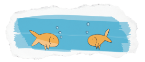
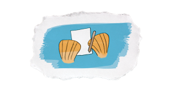
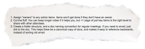
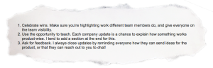

For a lot of product managers, writing probably isn’t on the radar. You’ve got shit to build. People are (probably) shouting at you. Who wants to fuss over something as boring and finicky as sentence structure?
But product management isn’t just about technical deployment. A lot of your day-to-day revolves around alignment: building it, wanting it, struggling to keep it in check. Those people shouting at you? Writing can be a powerful tool to get everyone in sync.
In fact, we consider it an “essential” for product strategy alignment.
To help explore this concept, we chatted with the awesome and thoughtful Ellen Chisa. Currently VP of Product at Lola, Ellen has used her blog (recently migrated to Medium) to share firsthand insights from the field. Having started her PM career at Microsoft and then Kickstarter, she’s seen product management from a variety of vantages. Her blog covers everything from product management interviewing to the dark side of her job to diversity in tech. She also has a fantastic Twitter account.
When you find an awesome job, do whatever needs to be done to stay in it and keep learning.
— Ellen Chisa (@ellenchisa) June 30, 2016
But Ellen doesn’t just write on her off-hours. Within her day-to-day, she uses writing to facilitate consensus and get stuff built. She gave us some insight into her approach.
Why nurture writing?
“World-class communication” is often listed among PMs’ essential capabilities. But what actually makes someone a good communicator? Writing is huge—but few product product managers consciously develop it as a skill.
“Writing is one of the things that everyone at the company can share,” Ellen explains. “Not everyone can be in the code base. Not everyone’s going to be reading the customer service tickets. A lot of the time, writing is how you end up communicating.”
Every month, Ellen sends an email recapping the roadmap from the previous month: what got done, what didn’t, what changed, and how successful they were. “To some extent you need everyone in the company on the same page about what direction you’re going and why. One way to communicate more at scale, besides just talking to everyone individually, is by writing it down and documenting it.”
A written document gets everyone on the same page. Literally.
What do we mean by “writing”?
Okay, dumb question. But we wanted to emphasize that “writing” isn’t just for books or blogs. Emails are “writing.” Specs are “writing.” Talking on Slack can even be “writing.”
While in her first PM gig at Microsoft, Ellen started to understand the power of writing in less “writerly” contexts. “My first manager at Microsoft actually cared very deeply about meeting notes and how meeting notes were worded and written,” she explains, “He didn’t talk as much about the writing so much as, ‘How do you share the notes? What do the notes mean?’”

Our recommendation: start thinking of all your written communication—whether it’s meeting notes, emails or user stories—as “writing.” It’s easy to be lazy over email. After all, it’s just an email. But by giving casual communication a little more care, you can smooth and strengthen your alignment process.
“Good writing” for product managers
So what does “good writing” mean for product managers? It’s not about clever turns of phrase. (Actually, it’s kinda the opposite.) Ellen told us her top 3 writing qualities for PMs:
- Clarity. In other words, knowing when to shut up. “I’ve noticed that it’s tempting, when you’re trying to be clear, to put down everything,” Ellen says, “But you can end up with too much convoluted information. Not everyone needs to wade through everything you waded through.”
- Economy. With clarity comes brevity. As Ellen puts it: “If you can write clearly, you’ll be able to make a much shorter document, there will be less confusion, and you’ll be more likely to build the right thing the first time.”
- Openness. “Even though you’re defining specifics, your tone still needs to be open—as though you’re open to talking and you want to hear questions,” Ellen says, “You want people to critique you if they think you’re wrong. So you have to stay confident but still open-minded. It’s a hard tone balance to strike.”
3 ways to improve your writing
Writing is hard skill—it’s a muscle that can be trained. We asked Ellen to provide some concrete tips for product managers wanting to finesse their style.
Read it out loud. It’s a classic writing tip, and it works. How does that sentence sound? Does it flow? When in doubt, go “grade four”: use super-simple sentences and write exactly how you would say something out loud. Again, less words = more clarity.
Vet it… BUT don’t just ask someone to read something and tell you what they think. Ask them to tell you what they understood. When Ellen gets a colleague to review her writing, she asks: “What do you think I was trying to get across with this email?”
Invest the time. Ellen says she spends about four hours writing her monthly recap emails. “Writing badly is quick. Writing well takes a really long time,” Ellen says. “I think it’s worth it, but it can be hard to justify since there’s not this immediate, tangible outcome.”

Template: Meeting Notes
Once you’ve mastered your style, master your structure. Developing repeatable formats for common internal communications—like meeting notes—facilitates alignment by removing ambiguity. Ellen emailed us a few pointers to keep in mind when writing meeting notes.

Our own product manager, Sameena, describes herself as “particular” when it comes to meeting notes. She put together this handy (and copy-pastable) template for everyday meeting notes. You can use this template to structure your meeting before it happens, or to document what went down.
Purpose/Goals
Bulleted list of what you want to accomplish in the meeting (write this down before the meeting).
Agenda
Numbered list of items up for discussion (again: put this together before the meeting).
What we know
Bulleted list of key pieces of information to keep in mind that pertain to your goals. This could be a list of talking points from a previous iteration of the same meeting.
Item 1: Should correspond to Item #1 in your agenda
For each item in your agenda, create a bullet list of key discussion points from the meeting. This should include
- The current situation
- What you want to do instead
- The limitations
- What was discussed
- What you need to accomplish your goal
Next Steps: For each item, write a bulleted list of next steps. We recommend assigning a champion for each “next step” in parentheses next to the text.
Repeat for other items in your agenda.
Task List
Write each person’s name, then write a list of tasks. This should correspond to the tasks listed in the Next Steps sections. Repetition is your friend.
Customize this template to fit your needs. Key points: 1) make clear WHY you’re in the meeting, 2) section your notes into digestible chunks (not just a big long bulleted list, 3) make it clear WHO is doing WHAT (and reinforce ownership with repetition).
Template: Company-Wide Communication
Ellen also sent us a few tips for putting together solid all-team emails.

Over here at Roadmunk, Sameena recommends structuring your organizational updates according to the following rundown:
Goals from the past month/quarter/year.
Bulleted list of high-level goals for whatever time period you’re recapping
Things that were done well and why
And who deserves kudos!
Things we can improve on and how
Don’t just say what went wrong. State actionable steps that can be taken to improve the process.
What’s coming up
State your overall strategy for the upcoming period, along with a bulleted list of high-level goals.
Important notes
Any important caveats or concerns with regards to executing your upcoming goals?
Request feedback
Ask people to tell you what they think!
Final thoughts: Writing doesn’t just align—it gets you ahead
Still not convinced that writing is worth working on? A big part of any product manager’s success depends on their communication—and writing can travel a lot farther than the meeting room.
“Broader written communication can help you get noticed by other people around the company,” Ellen says, “and that can help you move forward in your career as people see how you think through problems and how you solve them.”
Since we’re on the topic of product strategy alignment, we’ve got more templates for you. Our customizable template library will kickstart your roadmap and help you get everyone on the same page.